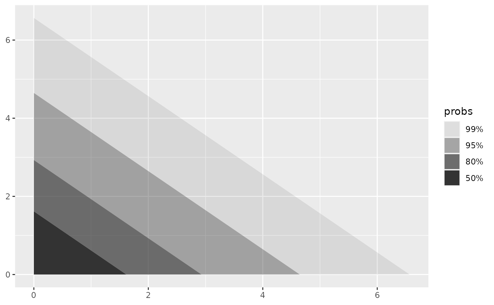
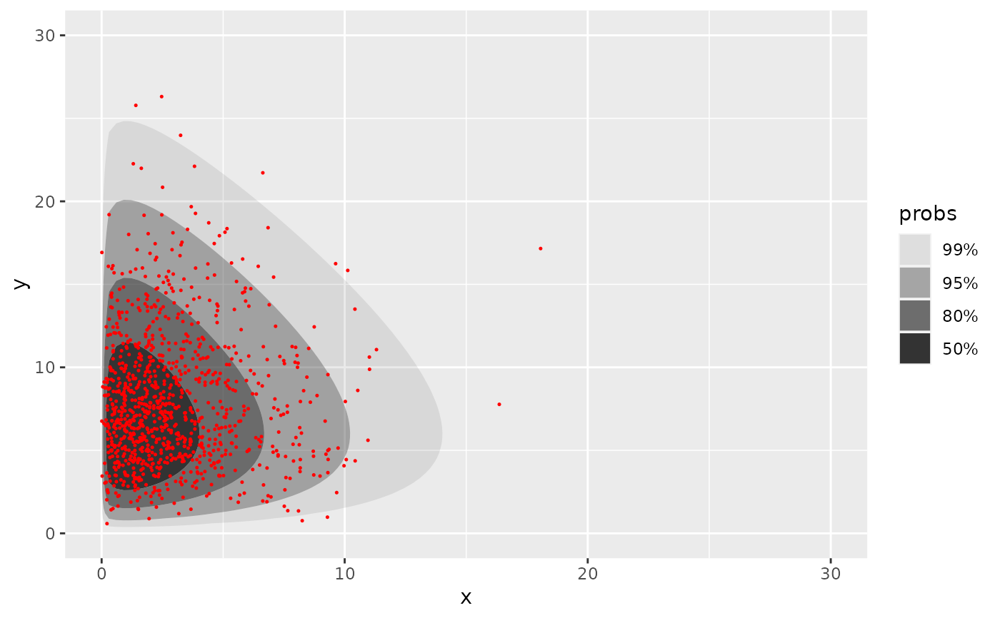
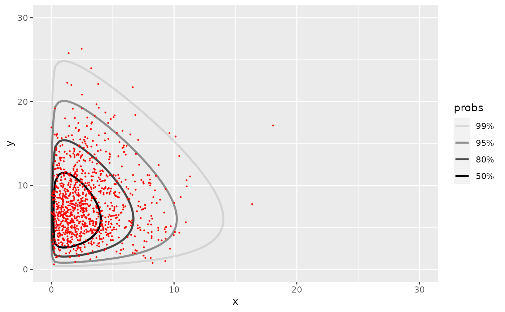

Highest density regions of a bivariate pdf
geom_hdr_fun.RdHighest density regions of a bivariate pdf
Usage
stat_hdr_fun(
mapping = NULL,
data = NULL,
geom = "hdr_fun",
position = "identity",
...,
fun,
args = list(),
normalized = TRUE,
probs = c(0.99, 0.95, 0.8, 0.5),
xlim = NULL,
ylim = NULL,
res = 100,
na.rm = FALSE,
show.legend = NA,
inherit.aes = TRUE
)
geom_hdr_fun(
mapping = NULL,
data = NULL,
stat = "hdr_fun",
position = "identity",
...,
na.rm = FALSE,
show.legend = NA,
inherit.aes = TRUE
)
stat_hdr_lines_fun(
mapping = NULL,
data = NULL,
geom = "hdr_lines_fun",
position = "identity",
...,
fun,
args = list(),
normalized = TRUE,
probs = c(0.99, 0.95, 0.8, 0.5),
xlim = NULL,
ylim = NULL,
res = 100,
na.rm = FALSE,
show.legend = NA,
inherit.aes = TRUE
)
geom_hdr_lines_fun(
mapping = NULL,
data = NULL,
stat = "hdr_lines_fun",
position = "identity",
...,
na.rm = FALSE,
show.legend = NA,
inherit.aes = TRUE
)Arguments
- mapping
Set of aesthetic mappings created by
aes()oraes_(). If specified andinherit.aes = TRUE(the default), it is combined with the default mapping at the top level of the plot. You must supplymappingif there is no plot mapping.- data
The data to be displayed in this layer. There are three options:
If
NULL, the default, the data is inherited from the plot data as specified in the call toggplot().A
data.frame, or other object, will override the plot data. All objects will be fortified to produce a data frame. Seefortify()for which variables will be created.A
functionwill be called with a single argument, the plot data. The return value must be adata.frame, and will be used as the layer data. Afunctioncan be created from aformula(e.g.~ head(.x, 10)).- geom
The geometric object to use display the data
- position
Position adjustment, either as a string, or the result of a call to a position adjustment function.
- ...
Other arguments passed on to
layer(). These are often aesthetics, used to set an aesthetic to a fixed value, likecolour = "red"orsize = 3. They may also be parameters to the paired geom/stat.- fun
A function, the joint probability density function on two variables, as a function of a vector of length 2.
- args
List of additional arguments passed on to the function
funas a named list.- normalized
Is the function normalized? (A proper PDF?) If no, set to
FALSE.- probs
Probabilities to compute highest density regions for.
- xlim, ylim
Optionally, restrict the range of the function to this range.
- res
Resolution of grid
funis evaluated on.- na.rm
If
FALSE, the default, missing values are removed with a warning. IfTRUE, missing values are silently removed.- show.legend
logical. Should this layer be included in the legends?
NA, the default, includes if any aesthetics are mapped.FALSEnever includes, andTRUEalways includes. It can also be a named logical vector to finely select the aesthetics to display.- inherit.aes
If
FALSE, overrides the default aesthetics, rather than combining with them. This is most useful for helper functions that define both data and aesthetics and shouldn't inherit behaviour from the default plot specification, e.g.borders().- stat
The statistical transformation to use on the data for this layer, as a string.
Aesthetics
geom_hdr_fun understands the following aesthetics (required aesthetics are in bold):
x
y
alpha
color
fill
group
linetype
size
subgroup
geom_hdr_fun_lines understands the following aesthetics (required aesthetics are in bold):
x
y
alpha
color
group
linetype
size
subgroup
Computed variables
- level
The level of the highest density region, specified by
probs, corresponding to each point.
Examples
f <- function(x, y) dexp(x) * dexp(y)
ggplot() +
geom_hdr_fun(fun = f, xlim = c(0, 10), ylim = c(0, 10))

# the hdr of a custom parametric model
# generate example data
n <- 1000
th_true <- c(3, 8)
rdata <- function(n, th) {
gen_single_obs <- function(th) {
rchisq(2, df = th) # can be anything
}
df <- replicate(n, gen_single_obs(th))
setNames(as.data.frame(t(df)), c("x", "y"))
}
data <- rdata(n, th_true)
# estimate unknown parameters via maximum likelihood
likelihood <- function(th) {
th <- abs(th) # hack to enforce parameter space boundary
log_f <- function(v) {
x <- v[1]; y <- v[2]
dchisq(x, df = th[1], log = TRUE) + dchisq(y, df = th[2], log = TRUE)
}
sum(apply(data, 1, log_f))
}
(th_hat <- optim(c(1, 1), likelihood, control = list(fnscale = -1))$par)
#> [1] 2.956547 7.979119
# plot f for the give model
f <- function(x, y, th) dchisq(x, df = th[1]) * dchisq(y, df = th[2])
ggplot(data, aes(x, y)) +
geom_hdr_fun(fun = f, args = list(th = th_hat)) +
geom_point(size = .25, color = "red")

ggplot(data, aes(x, y)) +
geom_hdr_fun(fun = f, args = list(th = th_hat)) +
geom_point(size = .25, color = "red") +
xlim(0, 40) + ylim(c(0, 40))
